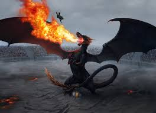
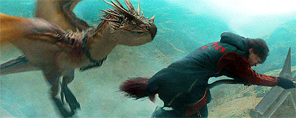

Hungarian Horntail Looks and Behavior
-
Looks: It has black scales, and is lizard-like in appearance. It also has yellow eyes, with vertical pupils like a cat's, bronze horns and similarly coloured spikes that protrude from its long tail which it will gladly deploy in combat.
 -
Behavior: Horntails are also known for being one of the most vicious and aggressive breeds of dragon and that is saying something since all dragons are known to be ferocious; even Rubeus Hagrid commented on their ferocity saying that the Horntail was a "right nasty piece of work". This breed is especially aggressive when protecting their young. Along with their viciousness, tail spikes and fiery breath, Horntails are shown being extremely fast in flight while able to keep up with a Firebolt broomstick, a broom capable of going from 0 to 150 miles per hour in 10 seconds. Horntails are also seen able to keep up with Harry Potter's flying skills; a very impressive feat considering Harry's talent as a seeker

Hungarian Horntail Abilities
The dragon's roar is a yowling, screeching scream, and its flame can reach to about fifty feet. While having a very far reaching flame the Horntail's breath can reach extremely high temperatures as it made a stone turn red hot in seconds. Its eggs are cement-coloured and particularly hard-shelled.